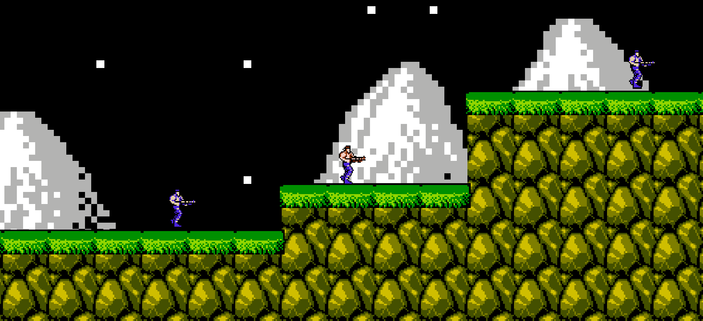
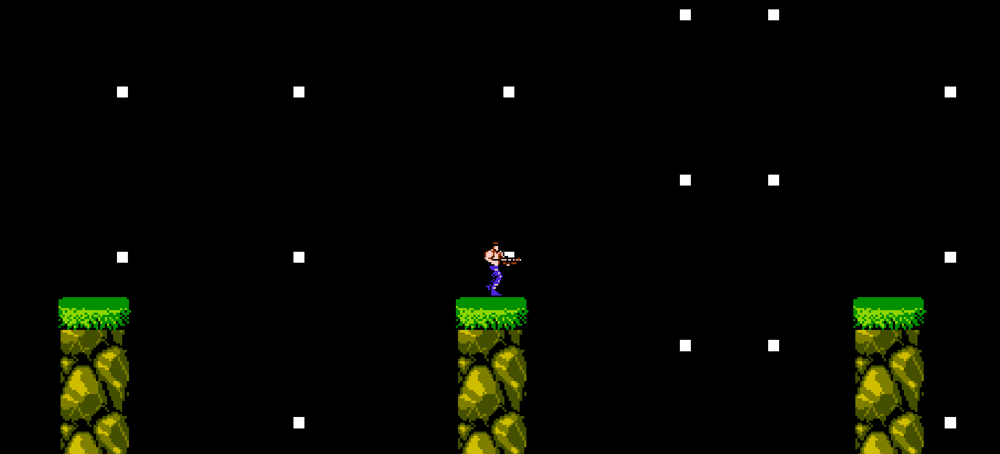
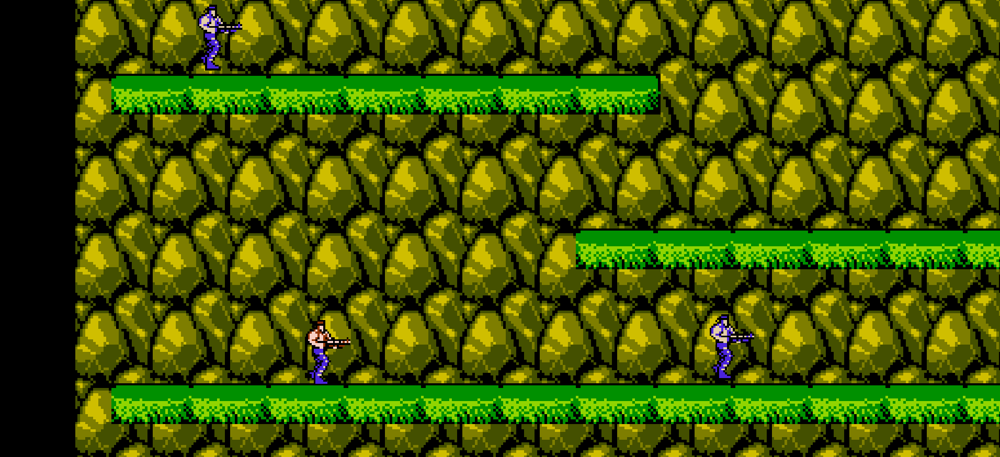
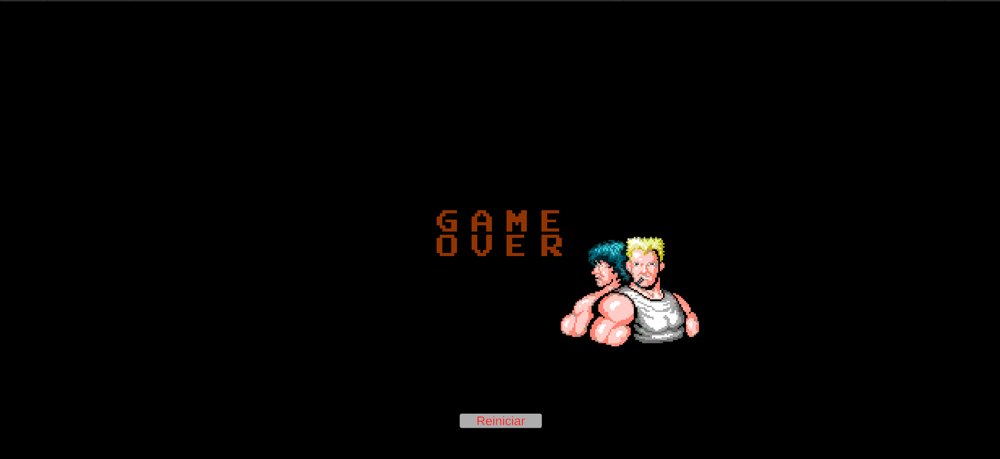

PROYECTO 01
CONTRA-LIKE
Juego 2D de acción y plataformas inspirado en los clásicos juegos arcade.

Sobre el proyecto
Contra-like es un proyecto 2D de acción y plataformas desarrollado utilizando Unity y C#. El jugador debe avanzar por diferentes zonas, enfrentarse a enemigos y superar obstáculos.
La idea del proyecto fue recrear algunas de las mecánicas principales del juego original con el propósito de aprender y fortalecer mis conocimientos en programación y desarrollo de videojuegos 2D.
Este proyecto fue realizado con fines educativos y de aprendizaje, sin intención de clonar, distribuir o infringir los derechos de autor del juego original.
El proyecto fue desarrollado como parte de mi proceso de aprendizaje en desarrollo de videojuegos.
Tecnologías
¿Qué desarrollé?
🎮 Movimiento
Sistema de movimiento del personaje dentro del escenario 2D.
👾 Enemigos
Implementación de enemigos dentro de los niveles.
🧱 Plataformas
Diseño de niveles utilizando plataformas y diferentes alturas.
❤️ Game Over
Sistema de derrota y reinicio de la partida.
Galería



